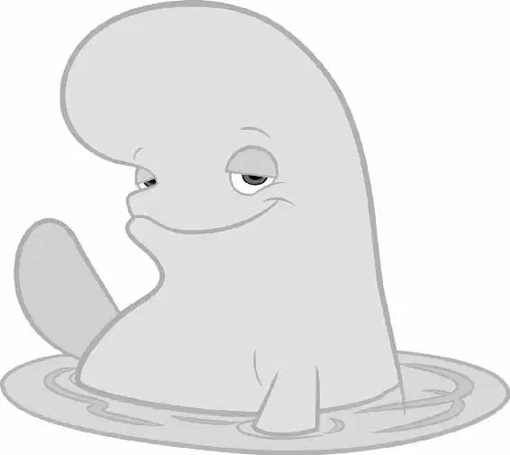

In the ocean, everyone panicked when they saw the truck drive over the bridge and away from the water!
“Quick! Guys, grab my fin!” Destiny said.
Jenny, Charlie, Marlin, and Nemo grabbed hold of Destiny as she took off, swimming at full speed along the coastline with Bailey by her side.
Using his echolocation, Bailey could see Hank struggling with the back door of the truck. “He’s trying to get the door open! OoooOooOo — It’s locked from the outside!”
With Bailey focused on Hank, nobody realized that Destiny was about to swim into a bank of land! All of a sudden, Bailey caught a glimpse of their surroundings and warned Destiny just in time. “Wall! Wall! Wall!” he shouted.
Destiny screamed but managed to avoid a collision. The group watched sadly as the truck drove out of sight.
“Oh, no-no-no!” Jenny cried.
Destiny asked Bailey where they were headed. “Oooooo — I’m losing ‘em!” he said.
★★★
Inside the truck, Hank had finally given up on the door. He climbed into the tank with Dory. “It’s over,” he said.
“No,” said Dory. “There’s got to be a way.” She looked around, frantically searching for an idea. Even though Hank doubted her, Dory continued to think.
“There’s ALWAYS a way!” she said, getting in Hank’s face.
“There isn’t, Dory, I’m telling you. This time there is no other way!”
“Hmm, what about that?” said Dory, pointing up to a vent in the roof of the truck.
“Holy carp,” said Hank. “There is another way.”
Dory was ecstatic! The fish in the truck chanted and cheered as Hank climbed over the tanks, holding Dory, making his way toward the vent.
“RELEASE! RELEASE! RELEASE!” they sang.
Somehow, someway, Hank and Dory squeezed through the vent!
A moment later, the driver and staffer screamed when Hank stretched and plastered himself across the windshield! “Get it off! What is it? Get rid of it!” they screamed.
The driver slammed on the brakes and pulled over. The two jumped out and checked the windshield — but Hank was gone!
“What the —?” said the driver, confused.
SLAM! The truck doors shut and a tentacle reached up, pushing down the locks. The humans were now locked out. Hank was in the driver’s seat, and Dory swam happily in a Big Gulp cup nearby.
“Suck it, bipeds,” said Hank with a chuckle.
“All right, Hank! You’ve got seven arms. Just — I dunno. Try something!” said Dory, curiously eyeing all the various truck parts.
Hank chuckled nervously as he began to push buttons and pull levers. The horn honked loudly, making the driver and staffer jump. One of the levers caused the gas tank door to pop open, and another made the lights flash. The two humans stood there watching, dumbfounded. Finally, Hank managed to put the truck into gear — and it started to roll forward.
“Good job, Hank!” cheered Dory.
The driver and staffer stayed close, trying to keep up on foot. But when the truck swerved, they had to jump out of the way.
“Can’t this thing go any faster?” asked Dory.
Hank tried one of the pedals on the floor, and the truck came to an abrupt stop. When he tried another, the engine revved and the truck surged forward. The staffer and driver stood in shock, watching the truck speed away!
Dory shouted out directions as Hank steered. But when they passed the two humans again, they knew they had driven in a circle!
“Turn right!” shouted Dory. “Back to the ocean!”
SCREECH! The truck made a U-turn and was heading straight for the humans! The two leapt out of the way to avoid being hit. Once again, the truck raced off, leaving the stunned driver and staffer in the dust! “We are so fired,” muttered the driver, catching her breath.
As Dory continued to navigate, the truck weaved in and out of traffic, causing other cars to swerve.
Dory smiled at Hank as he turned the wheel this way and that. “Good driving, Hank!”
“Pay attention to the road!” Hank said.
“Oh, I’m sorry,” said Dory. Up ahead she could see that the road split off in different directions. Her eyes darted around as she tried to figure out which way to go. Finally, she spotted a car pulling a boat. “Right! Boats go to the ocean!” Dory exclaimed.
The fish in the back of the truck were jostled around as Hank made a sharp right turn. Then Dory got a closer look at the driver of the car pulling the boat. He was sunburned and had sand all over his feet. Her mouth dropped open. “He’s already been to the ocean! Turn around!” she urged.
In the ocean, Marlin and the crew were losing hope.
“My sweet little kelpcake!” said Charlie through tears.
“Where is she?” said Jenny as she wept.
Bailey was trying to locate Dory. “OoOOOOoo — Oh wait! Oooo — Hold on. OoooOOo — I’m getting something!” he said excitedly.
“Is it them? Is everything perfect?” asked Destiny.
